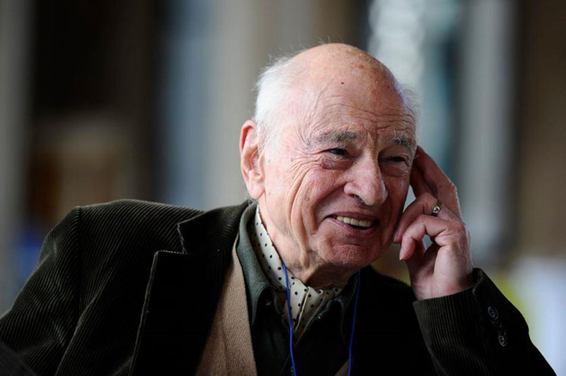
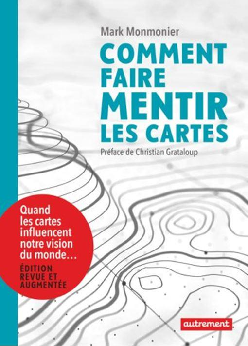

Proposer de conceptualiser méthodiquement sous-tend par un biais critique que de nombreuses personnes interagissent sous la pulsion, voire sous la restitution normée et mécanique d’acquis impératifs auxquels elles se plient inconsciemment. Une pointe de provocation se perçoit. Il n’en est rien. En invitant à conceptualiser méthodiquement, il est indiqué que chacune et chacun de nous est en mesure, tout en préservant son identité propre, de produire des conceptualisations démonstratives solidement construites faisant preuve, pour les plus denses, d’une scientificité affirmée.
Cette trame méthodique de conceptualisation à laquelle ces quelques lignes vont ouvrir un champ des possibles exponentiel, puisqu’adaptable à toute pratique intellectuelle, d’analyse et de réflexion des phénomènes provient de travaux effectués au cours de la décennie précédente. Ceux-ci avaient pour objectifs de mettre en relief des facettes de nos pratiques sociétales trop souvent occultées, car trop contraignantes dans leur conscientisation et la résolution des incomplétudes constatées. Aujourd’hui, seule une colonne vertébrale de conceptualisation fonctionnelle est exposée avec pour finalité que toute personne soucieuse de s’élever au-dessus de ses certitudes, de ses habitudes, de ses obligations, voire de ses normes puisse s’immerger en toute liberté dans l’étude de faits, de phénomènes, de réalités en conceptualisant ses actions sans tronquer, biaiser, arranger ou orienter les résultats pour satisfaire à ses attentes.
La conceptualisation est alors conçue comme un contexte praxéologique où l’intervenant, la conceptrice, l’actant s’approprie son objet avec toute la distanciation empathique impérative à la démarche. Là, il est nécessaire de préciser que cette conceptualisation méthodique est éloignée d’une méta-méthode ou d’un nouveau dogme méthodique. Elle est un paradigme d’étape à intégrer dans les pratiques visant à la construction du monde d’après-demain afin que celui-ci soit vivable pour les générations futures ainsi que pour tout ce qui constitue le vivant au cœur des interfaces Humanité/espaces terrestres.
L’action entreprise est accompagnée par des maximes forgées au fil des années d’interventions, de communications et de conférences. C’est pour cela que l’erreur est mise en avant et comprise comme une partie intégrante de toute démonstration : « Reproduire les erreurs des autres par infaillibilité, arrogance, voire idéologie est certainement la plus grave de nos erreurs ; bien que faire des erreurs soit une nécessité ontologique. Faut-il pour cela discerner et accepter l’erreur par ses leçons ? Ainsi, l’erreur devient un tuteur à même de jalonner notre évolution. » Sous certains aspects, il y a une mise en garde contre nos travers, sachant que dès lors que l’on prône une méthode il y des risques : « L’esprit prisonnier d’une méthode perçoit les faits qu’au travers des barreaux de sa cellule. » La conceptualisation méthodique pour sa part est la réalisation de : « Une méthode doit être l’expression de la liberté créative. Dans le cas contraire, elle n’est que reproduction, perte d’innovation, appauvrissement inventif et sclérose cognitive. »
Comment s’approprier une conceptualisation méthodique source de scientificité, d’adaptabilité, de modularité et d’efficience contextuelle tout en ayant conscience que ce n’est qu’une mise en œuvre d’un outil aussi performant qu’il puisse être ?
Un article représente une infime partie des réalités qu’il embrasse par l’exposition de son domaine d’investigation. C’est pour cela que dans le cas présent il se termine par l’incomplétude présente au sein de toute démarche de ce genre. Auparavant, une structuration conceptuelle est mise en relief. Elle prépare la conscientisation d’une trajection proactive, laquelle annonce des influences fonctionnelles. Il est alors mis en évidence l’influence de Buber Martin, puis de Novak Joseph, tous deux pris pour leviers afin de conceptualiser méthodiquement.
Mettre en place une structuration conceptuelle
L’étincelle à cette volonté de conceptualiser méthodiquement une démarche, une observation, une argumentation provient d’un retour sur une relecture des paroles du maréchal Foch (Bugnet, 2017, p.45) : « Avoir un but est règle générale, élémentaire dans la vie journalière, pour arriver à un résultat quelconque. Choisissez-vous-en un. Faites-vous un plan. Établissez votre programme. Et avec cela : ayez de la suite dans les idées, concentrez vos efforts, ne dispersez pas votre attention… »
Voici une démarche de conceptualisation personnelle à mettre en œuvre journellement pour toutes les activités auxquelles chaque personne doit répondre.
Outre les conseils éclairés de cette figure militaire, il est envisageable pour chacun de nous de construire méthodiquement sa propre structuration conceptuelle, car : « La pierre taillée doit être façonnée, celui qui l’oublie ne pourra la positionner. » Ces mots sont en adéquation avec la nature immuable de l’œuvre méthodique pour parvenir à une réalisation harmonieuse, ce qui quelque part nous ramène aux pyramides et à leurs techniques de construction.
La base fondamentale de la conceptualisation méthodique est indissociable du néo-socioconstructivisme lui-même influencé par les propositions de Vygotsky (1978) tout en demeurant fermement liée à l’esprit de la méthode la plus efficiente pour construire tout objet, la métaphore des pyramides se retrouve ici. La thématique prise pour objet d’étude doit être ouverte, explicite dans sa formalisation cognitive.
L’articulation argumentative spécifique élaborée par le concepteur permet des potentialités interprétatives au sujet des éléments et des constituants associés. Alors la thématique avec les liens de réflexion devient associative et exploratoire. Les orientations qui suivent cette induction sont tendues en direction de l’attraction du phénomène pour lequel il est nécessaire de démontrer et d’expliciter sa nature ou son fonctionnement.
Les orientations permettent de guider l’analyste, de capter son attention intérieure tout en fixant sa motivation pour demeurer fidèle à l’action entreprise. Des dynamiques viennent densifier ces traits. Elles visent à discerner les oppositions intrapersonnelles pour agréger les tensions, les attractions, les ambivalences et les oppositions. Elles sont modulaires en offrant des jeux diachroniques à la conceptualisation méthodique en prenant appui sur les facteurs mémoriels, conjoncturels, structurels et fonctionnels afin que les dimensions sociétales puissent être incluses dans la pensée en effervescence sans être édulcorée. Quelque part cette action de conceptualisation est proche d’une forme d’ethnométhodologie (Garfinkel, 2007 ; Coulon, 2002).
La scientificité attendue pour toute production à même de diffuser des savoirs, des évolutions de nos connaissances et des potentialités d’amélioration de nos actions au cœur des interfaces Humanité/espaces terrestres des règles méthodiques. Elles ont été présentées antérieurement (Revue Méthode, n°20, juin-juillet 2020). Les axes de sa constitution doivent être rappelés. Ils réclament que le producteur propose des données vérifiables, reproductibles, transposables, communicables, comparables, falsifiables tout en faisant preuve de pensée critique.
Les perspectives d’emploi et d’utilisation de toute conceptualisation méthodique guident la mise en forme de ce qui sera diffusé. Ainsi, la structuration est façonnée selon les objectifs de formation des éventuels destinataires. Elle le sera aussi en relation étroite avec la diversification des axes de lecture et des leviers d’intervention. La normalisation fait partie intégrante étant donné que la production de savoirs tend vers son assimilation. Lorsque le concepteur structure pour des améliorations, voire une ouverture en direction de potentialités insoupçonnées, il est nécessaire que les perspectives soient suffisamment explicites afin de se préserver de l’exercice médiocratique de délayage des informations.
Cette structuration révèle une densité croissante produite par la maitrise des capacités conceptuelles. Toutefois, aussi performante que puisse être cette démarche, elle ne peut exister sans la conscientisation d’une trajection proactive le plus souvent inconsciente.
Conscientiser une trajection proactive
La structuration conceptuelle succinctement dépeinte induit l’existence d’une trajection proactive produite par l’action de la chercheuse ou de l’analyste pour construire son étude sur un objet. La notion de trajection proactive a été contextualisée pour des dynamiques dialogiques en éducation (Brun-Picard, 2019). Cette utilisation participait à la constitution d’une interface communicationnelle sociétale pour laquelle les interlocuteurs interagissent au service de leurs destinataires.
Dans le cas présent où l’on conceptualise méthodiquement, la trajection proactive est employée en tant que dynamique neuronale qui innerve les différents constituants en présence pour préserver l’axe de recherche tout en le densifiant par la diversité connexe de ses zones proximales d’induction.
L’approche d’une trajection proactive peut être allégée de la présentation des zones proximales d’induction qui par leur seule dénomination laissent entendre : que toute dynamique produite par un actant qui traverse les constituants d’un domaine d’étude induit des interfaces fonctionnelles de friction, lesquelles sont des zones proximales que l’on peut matérialiser, voire définir en relation avec les dynamiques en présence.
Les aspects de la proaction mettent en évidence l’action intérieur à l’esprit de l’individu qui œuvre sur les plans conscients et inconscients de manière intuitive et instinctive tout en orientant par touche ses productions avec l’assurance méthodique d’une démarche réfléchie. Cette action sur soi-même implique une modulation dans les conflits de réflexion tout en retenant les facteurs porteurs. Les facettes de la trajection proactive dans leurs fonctions de traverser les éléments mis en synergie prennent corps au sein des contextes spécifiques pour lesquels l’analyste intervient. Sur ce socle il est en capacité de catalyser et d’agréger des objets apparemment disparates et en oppositions. Les implications sont essentiellement fonctionnelles puisqu’elles proviennent de l’actant par les réentrées qu’il effectue sur sa pensée en construction. Les orientations données en fonction des objectifs définis donnent les directives pour articuler méthodiquement chaque constituant. Les articulations se produisent pour cette proaction en réponse aux inductions, aux phénomènes, aux influences ainsi qu’aux expressions produites par la personne en cours d’action. L’œuvre interactive prend forme, car elle devient de nature programmatique tout en étant corrélée à l’étude entreprise pour suggérer des évolutions personnelles et collectives à partir de la conceptualisation réalisée.
Au sein de la proaction est positionné, pour façonner une conceptualisation méthodique, un jeu d’interfaces que l’on peut articuler à divers niveaux d’interaction, mais dont la pertinence est accrue en l’utilisant dans ce contexte. Le jeu d’interfaces permet d’assimiler les territoires inclus, la contextualisation, les territorialités, les connectivités et les réseaux par des représentations virtuelles. Il est alors aisé d’extraire les interdépendances et les impacts expansifs ou localisés
La trajection proactive mérite d’être intégrée dans les concepts vitaux des sciences humaines afin de concevoir des passerelles transdisciplinaires et surtout de se préserver de tout enfermement doctrinaire. Pour une conceptualisation méthodique, elle permet de relier parfois de manière opportuniste des éléments connexes et d’en extraire des analyses pertinentes propices à une meilleure compréhension des faits et des phénomènes abordés.
Des influences fonctionnelles
La structuration conceptuelle et la trajection proactive positionnées comme fondements à une méthodologie proviennent d’influences fonctionnelles dont les engrammes sont expérientiels. La pratique, la contextualisation, la mise en application, voire l’automatisation des démarches d’analyse sont des réalités avec lesquelles toute conceptualisation méthodique est forgée par l’actant. La part conséquente de subjectivité et l’incapacité à dissocier les références des modes opérationnels mis en œuvre posent un problème d’intégrité intellectuelle. Afin de limiter ce biais, la reconnaissance et la brève présentation des influences majeures que sont les travaux de Chevalier (2009) limiteront le sentiment d’appropriation abusive.
La diversité contextuelle des phénomènes s’attache aux richesses, à la pauvreté, aux sociétés, à l’histoire ainsi qu’aux héritages sociétaux. Elle inclut tout ce qui constitue les écosystèmes, les géosystèmes, les biosystèmes avec les ressources telles que l’eau ou l’énergie. La culture, le patrimoine, les cultes sont des parties intégrantes. Il est alors possible de relever les responsabilités, les aspirations et les silences. Les évolutions des pouvoirs, celles de la légitimité des forces en présence, des enjeux territoriaux ou sociétaux réclament un certain détachement pour ne pas être submergé par la masse d’informations accessibles. Les intensités, les densités, les ruptures sont autant d’aspects présents pour alimenter la conceptualisation méthodique. Alors les champs de forces en présence dans leurs temporalités, leurs orientations, leurs finalités et leurs destinations peuvent être discernés à bon escient pour mettre en relief les réponses données par les acteurs en fonction de leurs projets. Les formes des représentations qui peuvent être données projettent l’ordre dans lequel les phénomènes se déroulent ou le chaos engendré. L’analyste est en mesure d’exposer les lacunes, les conflits, les causalités, les dépendances ainsi que les apports propres à chaque partie. Les représentations sont des projections de la conceptualisation façonnée en fonction des résultats obtenus. Les fonctionnalités densifient à souhait les éléments sélectionnés. Elles prennent en considération les complémentarités, les intégrations, les mises en phase synchronique pour au final rendre compréhensibles les équilibres en présence tout en dépeignant les pouvoirs en présence et les enjeux qui en résultent. Ces différents éléments fonctionnels impliquent que les concepts de différenciation, de moindre contrainte, de rupture/continuité et de réentrée avec des temporalités adaptatives sont pour l’actant des engrammes profonds, automatisés et instinctifs.
Il aurait été attendu que la présentation de ces objets conceptuels source d’investigations approfondies soit plus dense que ces quelques lignes. Celles-ci sont conçues dans une fonction de mise en perspectives de ressources adaptatives pour entrevoir des relations et des dynamiques dialogiques à peine perceptibles qui trouvent une certaine résonance avec l’intégration du dialogue.
Une place particulière pour Buber
Construire progressivement une conceptualisation méthodique induite par des influences marquantes et par une trame initiale suffisamment directive indique que sous certains aspects l’analyste développe des capacités de dialogue. Le dialogue est alors conçu comme un levier structurel avec lequel le concepteur interagit pour faciliter l’ouverture de sa pensée sur la diversité et les réalités auxquelles il souhaite accéder. Là, vient s’immiscer Buber (2004). L’appel à cette référence d’autorité semblera inapproprié. Pourtant, le dialogue intérieur et celui entrepris avec les phénomènes étudiés exposent, même s’ils ne sont que matériels, des axes méthodiques pour progresser dans la connaissance et la maîtrise des objets abordés. Concevoir une conceptualisation en passant par Buber suggère que l’on s’approprie ses mots : « Au commencement est la relation. »
Cette facette de toute conceptualisation sous-tend une forme de dialogue subjectivé qui peut être objectivé lors de la structuration méthodique des opérations entreprises. Un dialogue avec soi-même est développé par le concepteur pour méthodiquement dérouler une structure argumentative et démonstrative, laquelle est l’expression d’une dialogique intrapersonnelle. Il faut pour cela se canaliser en fuyant l’argument d’autorité, en se préservant des tentations de la toute-puissance, en maitrisant ses pulsions et ses travers guidé pour ce faire par des valeurs de scientificité. Alors la distance nécessaire vis-à-vis de l’objet et vis-à-vis de l’effervescence cognitive prend forme. Le recul de la conceptualisation prend de la densité et les filtres contextuels sont gommés pour accéder aux réalités. La personnalité de l’analyste est orientée par le dialogue intérieur où se heurte parfois des antagonismes puissants dus aux croyances et aux certitudes. L’intersubjectivité, l’intégrité, l’impartialité et la responsabilisation quant aux productions proposées sont indissociable de cette dynamique dialogique intérieure pour conceptualiser méthodiquement une étude de phénomènes complexes. L’actant doit pouvoir s’adapter aux objets sans les tronquer ni se fourvoyer. C’est une conduite morale de la conceptualisation qui prend toute son importance par les limites qu’elle trace pour un dialogue avec soi-même.
La brève approche hors contexte des travaux de Buber montre à tout observateur les potentialités du dialogue pour conceptualiser l’exposition d’une pensée. Il est vrai que convoquer Buber pour soutenir une élaboration essentiellement intérieure dérangera les critiques, mais cette influence apporte le détachement et le décentrement si importants pour demeurer intègre. Sur ces directives il est aisé de positionner Novak afin de finaliser la conceptualisation.
Novak pour construire une carte conceptuelle
Buber place des aspects de différentes formes de dialogues avec lesquelles compose l’actant. Ce dernier favorise, en structurant ses fondements conceptuels tout en digérant les influences marquantes provenant en grande partie des méthodes collaboratives, l’intégration de Novak (2010) pour élaborer une carte conceptuelle virtuelle ou mieux encore physique en offrant une diffusion au plus grand nombre. Il y a la constitution d’une trajection proactive articulée sur les axes mis en synergie. Aller chercher Novak indique qu’en se dirigeant dans une direction définie pour laquelle des jalons sont pré-positionnés, l’intervenant est en mesure de tracer un chemin, lequel pourra être emprunté par ses pairs tout en poursuivant l’évolution attendue. Gandhi proposait déjà cela : « Ne suivez le chemin des autres. Allez au contraire là où il n’y a pas de chemin et laissez une piste. »
Novak avec ses travaux sur la construction des cartes conceptuelles permet de concevoir un itinéraire d’où un chemin émergera. Sans être exhaustif, il incite les analystes à assimiler les réalités, à organiser les informations, à intégrer la globalisation tout en exposant une production explicite. Pour cela, il inclut dans ces tracés matériels : des perceptions, des lectures des faits, des références et conscientise les filtres avec lesquels il aborde la réalité. Alors, il identifie les domaines et les thématiques. Il ordonne les flux tout en différenciant les sources et les constituants. Il extrait les concepts principaux pour rendre explicite sa diffusion. Il structure un plan d’exposition ce qui est une étape interne de la conceptualisation tout en étant une phase en elle-même. Novak insiste sur les aspects de sélection, de hiérarchisation, d’articulation et de structuration pour produire des informations préhensiles. La linéarité contextuelle des données est un impératif structurel afin de se préserver de toute errance et de toute tentation de spéculations cognitives. Il s’efforce de relier les éléments avec les dynamiques qui donnent vie au phénomène tout en positionnant les actants dans leurs rôles spécifiques et évolutifs. La valorisation des éléments transversaux est une utilisation pragmatique de la transdisciplinarité sans pour cela la nommée, mais en employant ses potentialités. Ainsi, il est en mesure dans sa conceptualisation méthodique cognitive de façonner l’image projetée tout en finalisant l’étude entreprise et en donnant une représentation matérielle de ce qui est ou de ce qui a été. Enfin, l’exposition explicite de la démonstration argumentative vient finaliser la trame méthodologique. Cela indique que les démarches de construction des cartes conceptuelles sont celles mises en œuvre dans une conceptualisation méthodique.
Novak apporte des pistes, une trame, des articulations et des directives pour produire une représentation projective d’une étude ou d’une réflexion. Il est vrai que ses propositions sont à destination des cartes conceptuelles, mais la mise en œuvre peut s’effectuer pour une structuration conceptuelle méthodique sans dénaturer l’esprit de la réalisation. Cette référence praxéologique apporte à tout analyste des trames fonctionnelles pour décortiquer les réalités sans les tronquer, sans les orienter, sans les biaiser et moins encore les dogmatiser. Toutefois, aussi efficace que puissent être ces axes d’interaction, il demeurera une part d’incomplétude à intégrer dans la conceptualisation effectuée.
Avoir conscience de l’incomplétude
L’incomplétude accompagne toute conceptualisation (Brun-Picard, 2012, pp.59-72) notamment lorsque celle-ci s’attache à des territoires ou à des interfaces. L’action de conceptualiser méthodiquement porte en elle une incomplétude similaire. En effet, il est impossible de rendre tout le réel auquel nous avons accès, puisque nous appartenons à ce réel en tant qu’observateur ou analyste.
Cela induit une incomplétude que nous devons conscientiser et intégrer dans nos acceptations devant la complexité si chère à Morin (1999).
Par ailleurs, nul ne peut oublier cette maxime : « L’incomplétude d’une œuvre est une réalité avec laquelle vit son étincelle créatrice. » Il nous incombe alors de préserver et d’entretenir une telle étincelle aussi imparfaite qu’elle puisse être.

Morin
L’incomplétude se trouve dans ce qui est à accomplir, ce que l’on accepte, ce que l’on conçoit. L’accessibilité des objets, des contextes, des phénomènes et des réalités l’alimente. Les opportunités, les contextes, les offres et les aspirations font qu’une large diversité d’option prend forme. Les inductions en présence en sont la cause principale. Elles prennent forme sur les attentes individuelles, collectives et sociétales, les obligations, la disponibilité cognitive et les antagonismes qui habitent chaque individu. Le positionnement proximal, distant, dépendant ou en immersion est complexifié par les orientations, les références et le rendu finalisé. Cela indique que la construction conceptuelle est une incomplétude. En effet, les articulations, les relations, l’agencement des informations, les moyens mis en synergie, l’utilisation des phénomènes sont autant de facettes qui laissent libre cours à toute expansion hors du contrôle de son producteur. L’Être vient intensifier l’incomplétude présente au cœur de toute conceptualisation. Les héritages, le positionnement, l’esprit et l’engagement font que ce qu’est le concepteur ou la conceptrice dissimule une part des réalités le plus souvent inconsciemment refusant de dévoiler sa personnalité même à sa propre personne. C’est une réentrée de l’individu sur lui-même. Aussi brillant que l’on prétende l’être, il est impossible de s’analyser en train d’analyser un objet pour la production d’une conceptualisation de celui-ci, sauf si l’objet est son Être, et encore des doutes sont permis quant à l’étendue de cette forme d’incomplétude.
Edith Mukakayumba et Yannick Brun-Picard, congrès ACFAS, Québec, 2013
L’incomplétude nous informe au sujet de quelques enseignements propres à toute conceptualisation méthodique. Ceux-ci mettent en relief l’attention nécessaire aux phénomènes en faisant preuve de distanciation empathique pour limiter les influences et les manipulations. Elle annonce le besoin d’entretenir et de développer les capacités de modulation, d’implication, de validation et de valorisation pour que les productions demeurent libres de tout dogme. Sous certains traits, cela indique que l’observation intégrée tellement décriée par les tenants de l’observation participative pour des justifications fumeuses d’une éthique plus que malléable doit pouvoir alimenter toute œuvre de conceptualisation méthodique.
En outre, elle rappelle à toute personne que : « L’obscurantisme se répand lorsque les consciences ne tolèrent que ce qui les conforte. » Par extension, cela signifie que rejeter l’idée d’incomplétude est contreproductif et néfaste à toute évolution des savoirs.
L’incomplétude de cette trame méthodique est concrète et pour ainsi dire préhensile. La connaissance de ses vides permet à l’analyste de se préserver des inquisiteurs de la pensée et de la production des savoirs qui le plus souvent ont occulté les leçons de Sokal et Bricmont (1999) ou de Monmonnier (1993), lesquels nous rappellent que toute démarche scientifique peut être manipulée au service d’une idéologie ou de la préservation des intérêts de quelques institutionnels. C’est pour cela que tous les apprenants sont conviés à se pencher en direction de la conceptualisation pour améliorer leurs compréhensions et leurs actions au cœur du monde en évolution.
L’incomplétude se vérifie en un regard par l’intermédiaire de la figure ci-présente où ont été synthétisés les éléments trop brièvement présentés tout en reformulant des aspects et en ouvrant des perspectives de développements et d’améliorations.
La veilleuse de la conscience alerte quant à la réception de telles orientations pour lesquelles, en toute humilité, Charles De Gaulle peut être convoqué : « Les esprits audacieux et les gens qui sortent de l’ordinaire s’attirent la critique des médiocres aussi sûrement que le paratonnerre attire la foudre. »
Dans le cas présent des lignes proposées, chaque personne est reconnue comme étant capable de produire des analyses pertinentes, dès lors qu’elle accepte de conceptualiser méthodiquement, ce qui au regard des systèmes clientélistes où la cooptation et la clarté opaque sont des normes ne peut que déranger les institutionnels. Il est probable que cette incomplétude sociétale soit la plus contraignante à dépasser pour cette pratique universelle.
Conclusion
Ayant débuté avec des mots du maréchal Foch, il est bien venu d’entamer la conclusion avec d’autres de ses paroles. Celles-ci invitent à la méthode : « Les grandes affaires ? Je les traite comme si elles étaient petites. Ce n’est pas difficile. La méthode est toujours la même. » (Bugnet, 2017, p.58) Il est vrai que les conseils de méthode donnés par le maréchal Foch avaient pour objectif la gestion des armées, mais en conceptualisant nos actions et nos positionnements nous sommes en capacité d’œuvrer avec méthode sans pour cela être enfermés et dépendants d’une méthode.
Nous effectuons une réentrée sur nous-mêmes dès lors que nous avons l’intégrité d’employer la méthode comme un outil et non comme une source, voire pire la seule source de légitimité aux yeux des pairs.
Les éléments de conceptualisation initiale accompagnés d’une trajection proactive donnent un paysage d’intervention ouvert sur un horizon où les méthodes collaboratives, l’influence de Buber et de Novak participent totalement à toute entreprise dont l’objectif est de conceptualiser méthodiquement. Cette richesse trop superficiellement exposée révèle une incomplétude incompressible due à la nature même de la démarche développée.
Toutefois, la trame dessinée avec son ossature pragmatique (James, 2011) et malléable permet de reproduire et de transposer les indications proposées avec la rigueur nécessaire à toute expression de scientificité tout en préservant la liberté d’une conceptualisation personnelle. La progression méthodique par la sélection argumentée et légitimée des leviers propres à la compréhension d’un phénomène est une invitation à faire autre chose que du commentaire de texte, de la compilation ou de l’exposition, pour entrer de vive force dans la conceptualisation et la théorisation. Ce n’est pas une exhortation « aux délires créatifs sous acide ». C’est une incitation à s’extraire de sa zone de confort du référencement normalisé pour entrer dans la subjectivité objectivée où des facettes de la réciprocité transformative font leur œuvre, en permettant à tout actant d’améliorer ses connaissances sur le monde des faits, comme nous y engageait Popper (1998).
Ainsi, toute personne soucieuse de progresser dans l’étude des phénomènes sociétaux, et plus largement sur des thématiques où l’interface Humanité/espaces terrestres est le contexte physique d’investigation, se trouve en capacité de conceptualiser méthodiquement ses aspirations. Cet article pose des jalons utilisables par toute personne curieuse des potentialités offertes par la conceptualisation méthodique d’une étude pour tendre dans une direction où l’objet induira la méthode.
Y. B-P.
BIBLIOGRAPHIE
Brun-Picard Yannick, 2012, L’incomplétude en géographie, pp.59-72, in, Mukakayumba Edith et Lamarre Jules (dir.), La géographie en question, Armand Colin.
Brun-Picard Yannick, 2019, Le dialogue en éducation et en enseignement, Trajection proactive au cœur d’une interface communicationnelle sociétale, L’Harmattan.
Brun-Picard Yannick, 2019, Quand l’objet induit la méthode, Conceptualisation des interfaces sociétales d’investigations conjoncturelles, L’Harmattan.
Buber Martin, 2004, The life of dialogue, Routledge.
Bugnet Charles, 2017, En écoutant le maréchal Foch, Grasset.
Chevalier Jacques, Buckles Daniel, 2009, Guide sur la recherche collaborative et l’engagement social, ESKA.
Coulon Alain, 2002, L’ethnométhodologie, PUF.
Garfinkel Harold, 2007, Recherches en ethnométhodologie, PUF.
James William, 2011, Le pragmatisme, Flammarion.
Monmonnier Mark, 1993, Comment faire mentir les cartes ? Flammarion.
Morin Edgard, 1999, Relier les connaissances, Seuil.
Partager cette page